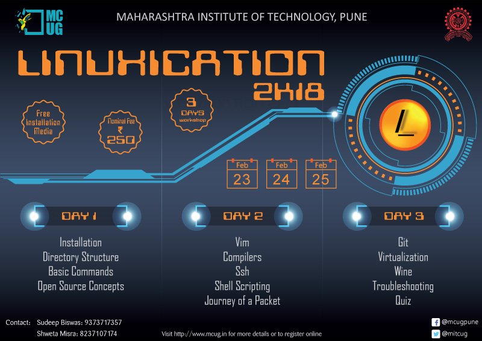

Linuxication
What is Linuxication?
Linuxication is a basic event oraganised by a group of zealous students with an objective to teach others the basics of linux. It encompasses sets of sessions organised and taken by students.
Register Now
Linuxication is a three day workshop educating the masses about Linux and open source concepts from the grounds up. The workshop is conducted at a very nominal fee of Rs. 250/-.
We are excited to bridge the gap between you and Linux. Do join us for this hands-on 3 day workshop

Events
Linuxication '18

In keeping with our motto of sharing knowledge and bridging gaps we at MCUG have been organizing an annual 3-day workshop – ‘LINUXICATION’ for almost a decade now. Every year students of various branches of engineering from colleges all over Pune join us for this workshop. The main aim is to provide the students an insight into the Linux operating system and its vast usage in the industry. We try to encourage students to become a part of the open source community and explore it’s vast dimensions. Various sessions on topics ranging from installation of the Linux operating system, basic commands used in Linux, shell scripting etc. to general open source concepts are conducted. All these sessions are conducted by the members of MCUG, thus providing the participants a friendly atmosphere to learn in. The story of Linuxication so far has been one of immense success. We have received appreciation from all the participants so far and we hope to make it a bigger success in the years to come.
Linuxication '17
Abiding by the moto "Sharing knowledge, bridging gaps" MCUG(MIT Computer User's Group) organized their flagship event "LINUXICATION" a workshop that acquaints the budding computer enthusiasts with the basics of Linux based operating systems and provides motivational guidance for being a part of the open-source community. The workshop was conducted over three days from 5th Februrary to 7th Februrary in Department of Computer Engineering at MIT, Pune. The event saw a great response with about 150 participants for the workshop.
First day of the workshop began with Industrail Talks by Mr. Raju Vindane, an intern with the Humara linux project and a contributor to the projects like Diaspora and Debian and Mr. Dhanesh Sabane, a final year student who is an active contributo to Fedora and Mozilla. The speakers spoke about the need and the benefits of using the open source technology and tried to make students acquainted with the evolution of Linux and other open source technologies.
The main event started following the Industrial Talk which saw an array of sessions delivered by the members of MCUG beginning with the basics and going upto some advanced technologies. Pre-installation session gave students a brief idea of firmware basics and booting process which would help them to know the actual process that goes on behind the scene. This was followed by an extended installation session where all the students installed Ubuntu flavor of Linux on their laptops. Just to get hang of things and make people familiar with the operating system some basic sessions like Directory Structure and Basic Commands followed the installation.
Second day saw some interesting sessions which were focused on displaying the true power of Linux and open-source softwares. Sessions like shell scripting, GCC-GDB, Source Code exploration put forth some of the core fundamentals of automation and programming. The session on SSH-Telnet dealt with basic networking proficiency.
The last day was aimed at providing the students with knowledge of some advanced Open Source technologies. This day includede some of the most important and extended sessions like Advanced Shell Scripting, Emacs, Git and Advanced Commands which dealt with networking and text manipulation
With this the last day concluded on a high note with an overwhelming response from the participants who showed interest in making a shift from Windows to the open-source software.